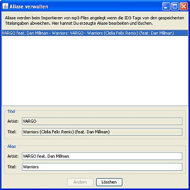

Was sind Aliase?
Die Titelinformationen wie sie in der laut.fm-Datenbank hinterlegt sind stimmen nicht immer unbedingt mit dem überein was in den ID3-Tags Deiner lokalen mp3-Datei steht: In der mp3-Datei könnte z. B. "Xyz feat. Abc" als Artist stehen. Bei laut.fm findest sich nur "Xyz" als Artist, das "feat. Abc" ist dort ordnungsgemäß in den Titel gewandert.
Die Folge ist das Station Admin den Titel im MP3-Explorer oder beim Importieren in eine Playlist nicht mehr zuordnen kann. Hast Du aber nach dem Titel gesucht und ihn mit anderen Titelinformationen bei laut.fm gefunden merkt sich Station Admin die Informationen aus Deiner mp3-Datei als Alias für diesen Titel und kann ihn künftig zuordnen.
Aliase verwalten

Aliase entstehen automatisch bei der Suche via Titelimport oder im MP3-Explorer. Einmal erzeugte Aliase kannst Du aber bearbeiten oder löschen: Klicke dazu auf im -Menü
In der Dialogbox siehst Du eine Liste aller existierenden Aliase. Wählst Du eins aus kannst Du es unten bearbeiten oder löschen.